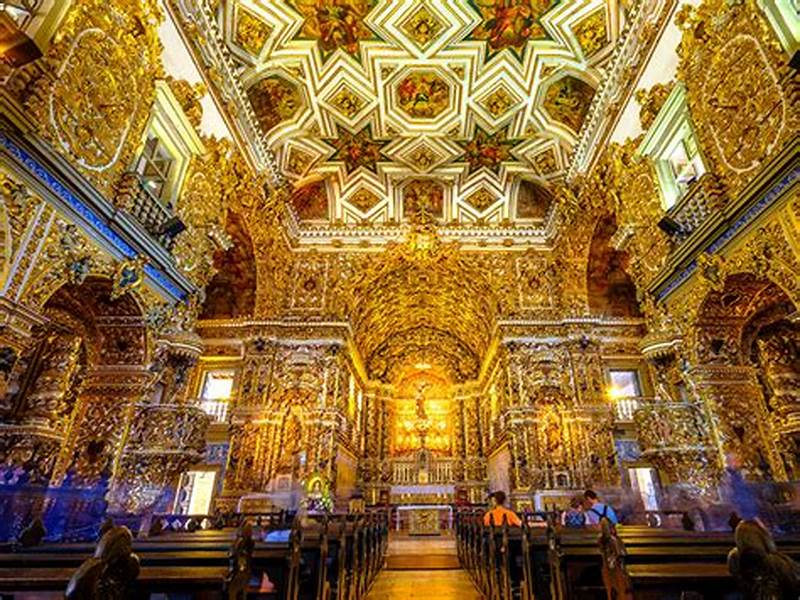
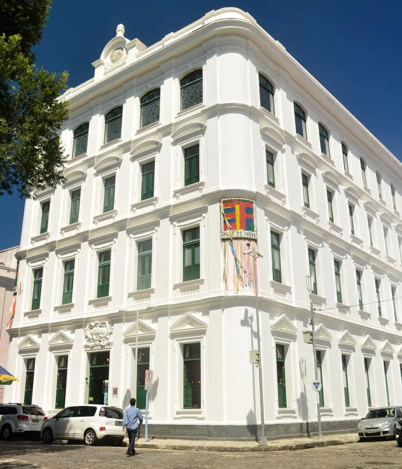

Sinta a História Respirar:
Igreja de São Francisco

A Igreja de São Francisco é um dos marcos mais importantes do Recife Antigo. Sua arquitetura barroca, ricamente ornamentada com talhas em madeira e azulejos, encanta visitantes de todo o mundo. Explore o Convento, admire as capelas e mergulhe na história da fé e arte no Recife.
Arte e Cultura em Sintonia:
Paço do Frevo

O Paço do Frevo é um museu dedicado ao frevo, ritmo musical contagiante que é patrimônio cultural do Recife. Descubra a história do frevo, admire instrumentos musicais, assista a apresentações e vivencie a energia vibrante dessa dança que contagia o mundo.